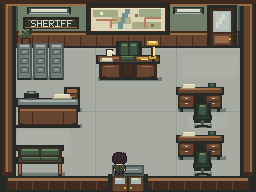
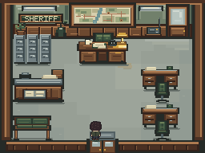

Sheriff's Station main interior — v0.2.1
Concept reference, preserved native-before capture, and captured native-after frame. Native images use integer scaling and browser smoothing is disabled.
Native comparison scale:

Illustration reference; scaled to fit.

Exact 256×192 framebuffer at the selected integer scale.

Exact 256×192 framebuffer at the selected integer scale.